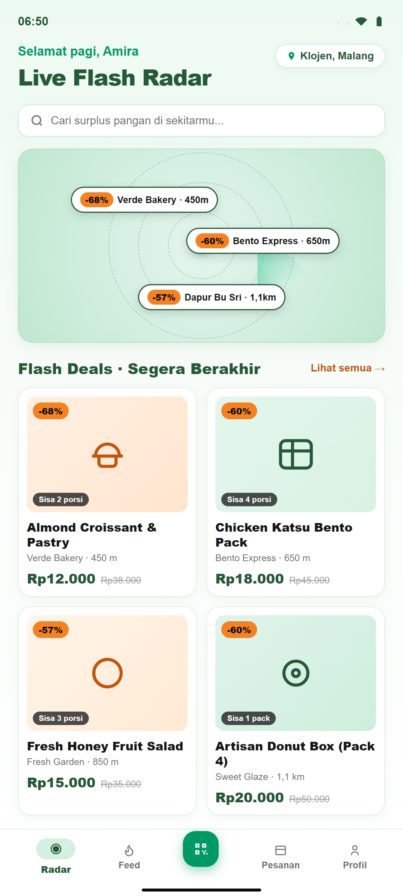
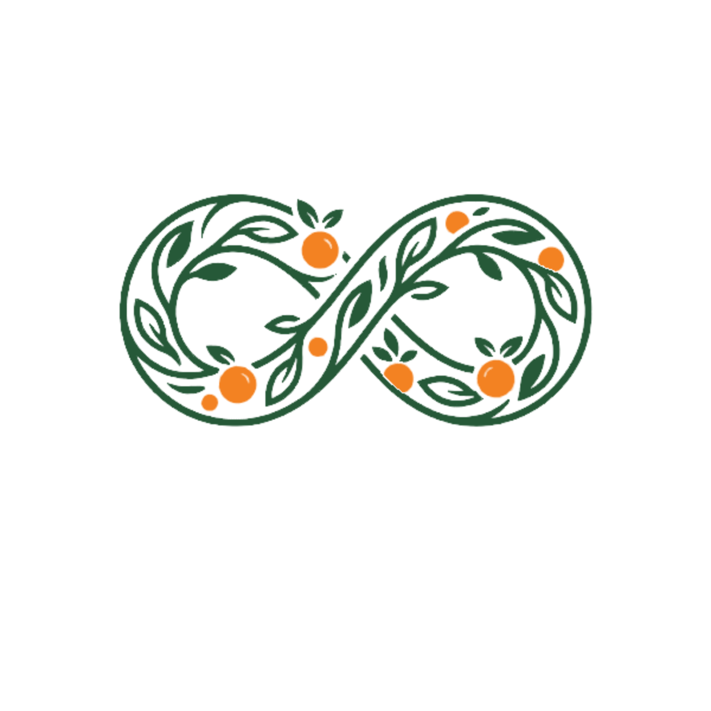
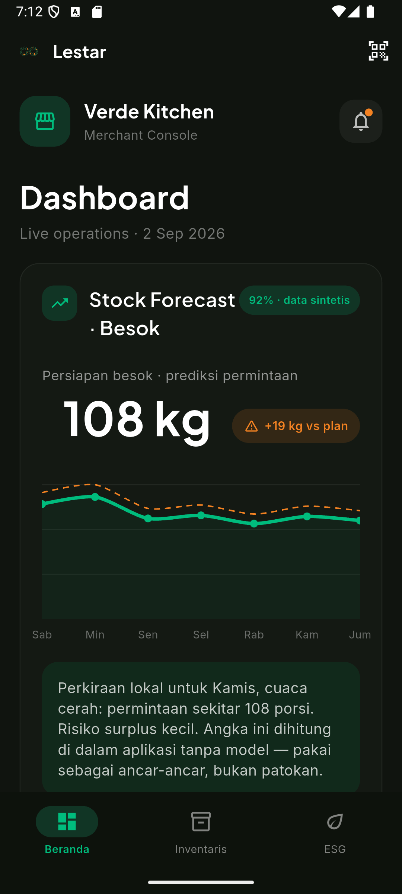
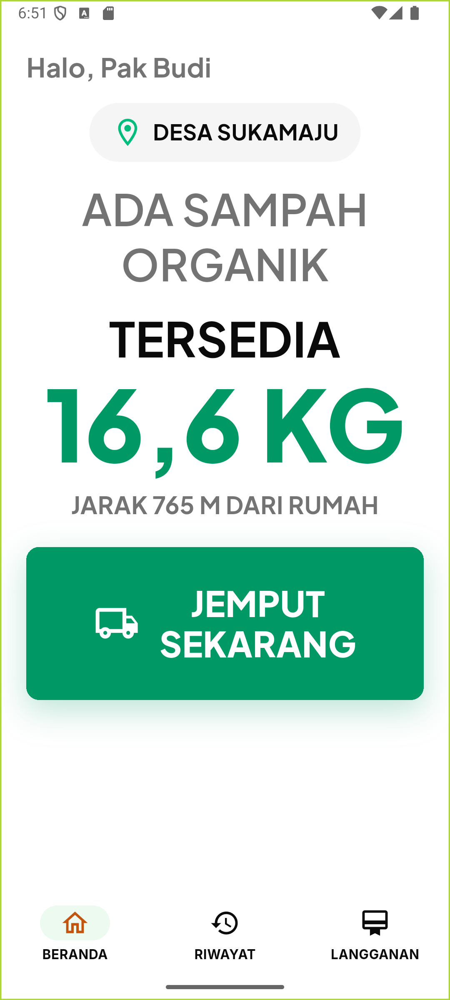

Konsumen

Ekonomi sirkular tiga sisi
Platform ekonomi sirkular yang menghubungkan merchant F&B, konsumen, dan pengolah limbah organik dalam satu alur kaskade botani.
Dicegah sebelum surplus, diselamatkan cepat via B2C, lalu dialihkan ke B2B bila tidak layak konsumsi.

Urgensi Nasional
Food waste menghapus nilai pangan, ekonomi, dan lingkungan sebelum sempat dipulihkan.
Sumber: UNEP Food Waste Index 2024 · KLHK 2025
Alur Kaskade Botani
Validasi fisik adalah gerbang nyata sebelum surplus masuk ke jalur yang tepat.
Merchant mencatat pangan belum terjual
Analisis data & rekomendasi tindakan
Pemeriksaan standar merchant
Layak konsumsi: diskon kilat
Tak layak: pakan maggot & kompos
Jejak emisi & sertifikat dampak
Tiga Pengalaman Khusus
Lestar merancang arsitektur interaksi presisi untuk setiap ekosistem pengguna.



Buffer Intelligence
Buffer Intelligence memakai kombinasi model LSTM dan heuristic untuk memprediksi kurva permintaan besok. Merchant berani memproduksi lebih banyak karena setiap surplus punya kepastian penyaluran.
Asal setiap prediksi dicatat transparan pada forecasts.source.
Pengukuran Kinerja
Komitmen keberlanjutan berbasis data nyata yang diverifikasi secara berkala.
Akses Langsung
Unduh APK Lestar untuk mencoba alur ekonomi sirkular secara langsung. Ukuran berkas: 75,2 MiB.
merchant@lestar.idamira@lestar.idbudi@lestar.idlestar2026Privasi: akun demo hanya untuk demonstrasi penjurian KMIPN VIII.